Children's Coloring Book
In the early stages of my role as a marketing assistant, I undertook the creative challenge of producing spreads for a children's coloring book intended for use in UCI's Child Care Services. My task involved illustrating Peter the Anteater in various popular UCI locations. Witnessing the final product being utilized by the children was especially rewarding, and these moments are captured in the collection.
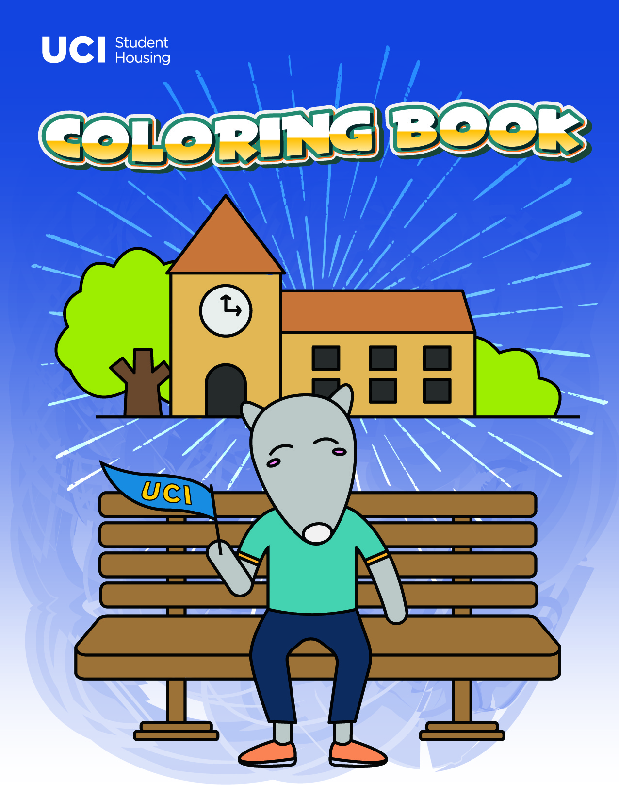 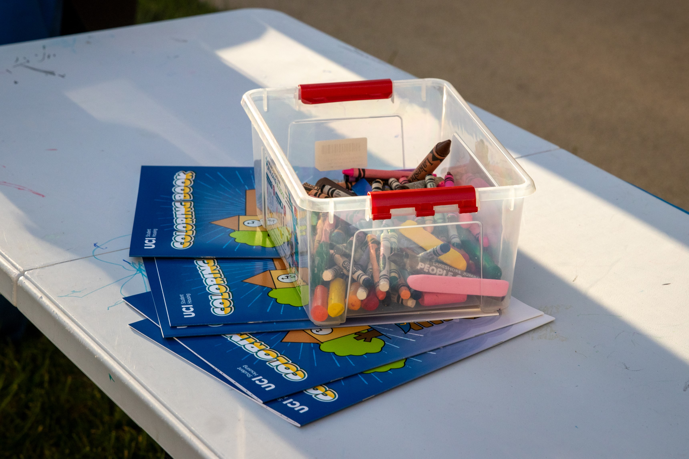 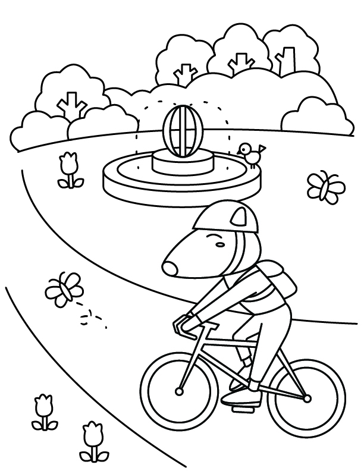
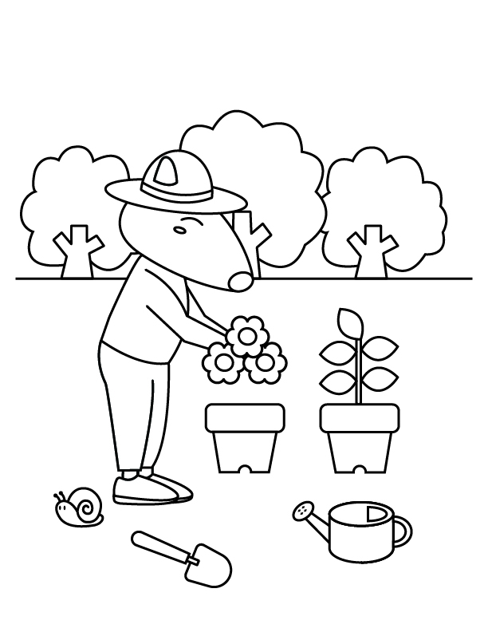
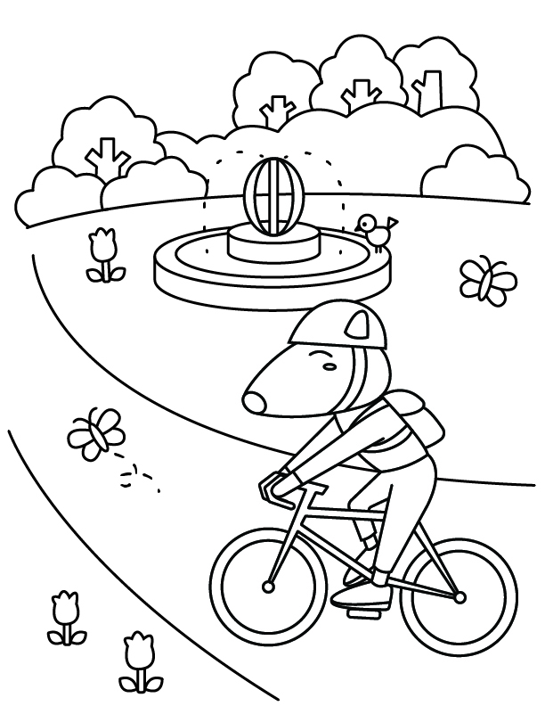
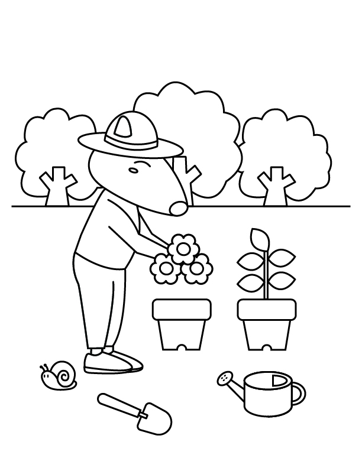
 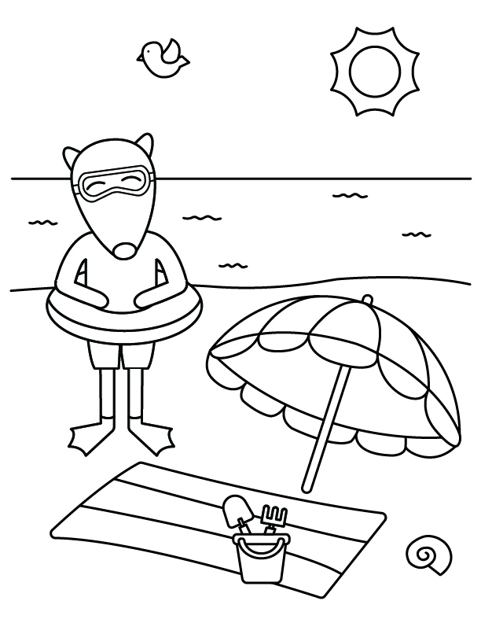
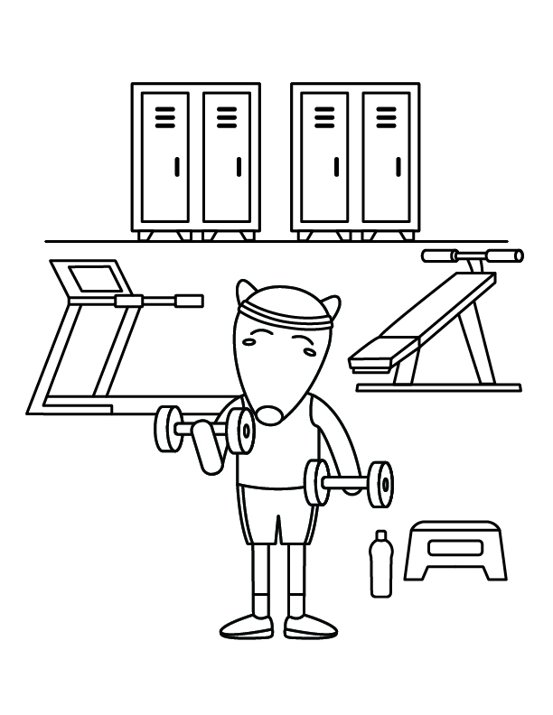
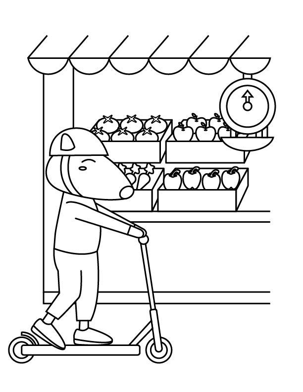
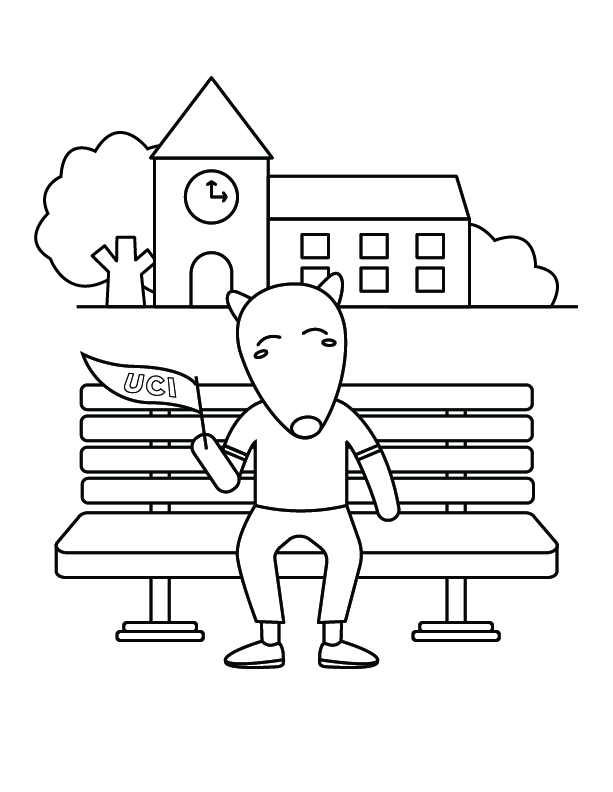
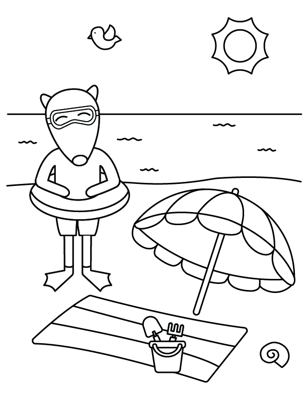
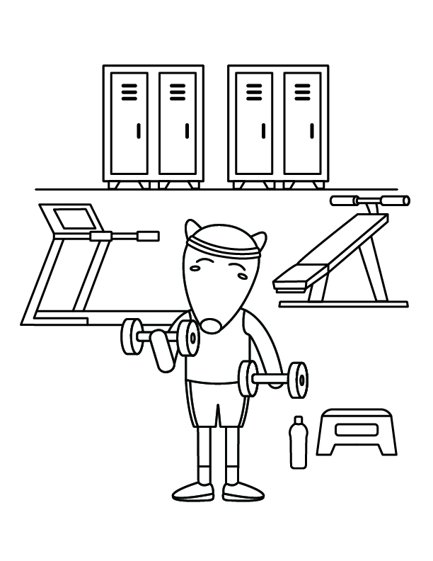
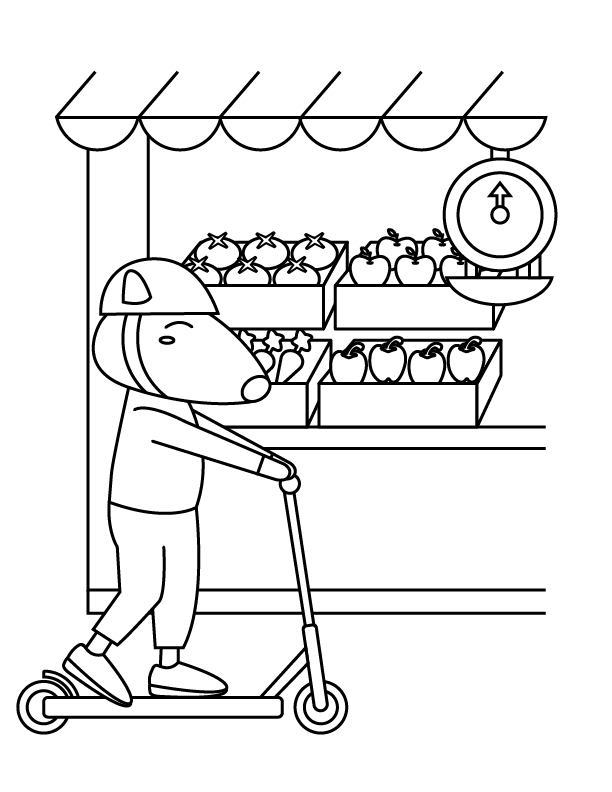
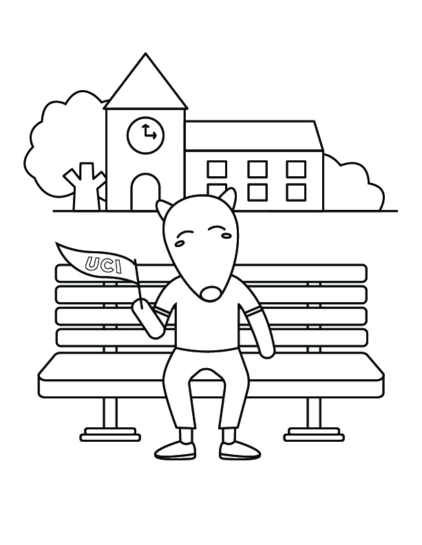